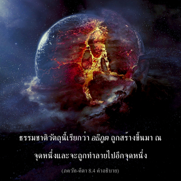

โอ้ ผู้ยอดเยี่ยมในบรรดาดวงชีวิต ธรรมชาติวัตถุที่เปลี่ยนแปลงอยู่ตลอดเวลาเรียกว่า อธิภูต (ปรากฏการณ์ทางธรรมชาติ) รูปลักษณ์จักรวาลขององค์ภควานซึ่งรวมถึงเทวดาทั้งหลาย เช่น เทพเจ้าแห่งดวงอาทิตย์และดวงจันทร์เรียกว่า อธิไทว และข้าองค์ภควานสูงสุดซึ่งมีอภิวิญญาณผู้ประทับอยู่ภายในหัวใจของทุกชีวิตเป็นผู้แทนเรียกว่า อธิยชฺญ (พระเจ้าแห่งการบูชา)

ธรรมชาติวัตถุเปลี่ยนแปลงอยู่ตลอดเวลา โดยทั่วไปร่างวัตถุจะต้องผ่านหกขั้นตอน คือ การเกิด เจริญเติบโต คงอยู่ชั่วระยะหนึ่ง สืบพันธุ์ หดตัวลง และจากนั้นก็สูญสิ้นไป ธรรมชาติวัตถุนี้ เรียกว่า อธิภูต ถูกสร้างขึ้นมา ณ จุดหนึ่ง และจะถูกทำลายไปอีกจุดหนึ่ง แนวคิดที่ว่ารูปลักษณ์จักรวาลขององค์ภควานฺซึ่งรวมถึงเหล่าเทวดาพร้อมดาวเคราะห์ เรียกว่า อธิไทวต ผู้ที่ปรากฏในร่างกายควบคู่ไปกับปัจเจกวิญญาณคืออภิวิญญาณ ซึ่งเป็นผู้แทนที่สมบูรณ์ของ องค์ศฺรีกฺฤษฺณ อภิวิญญาณเรียกว่า ปรมาตฺมา หรือ อธิยชฺญ ทรงสถิตในหัวใจคำว่า เอว มีความสำคัญโดยเฉพาะในเนื้อหาของโศลกนี้ เพราะว่าคำนี้องค์ภควานฺทรงเน้นว่า ปรมาตฺมา ไม่แตกต่างไปจากพระองค์ อภิวิญญาณ บุคลิกภาพสูงสุดแห่งพระเจ้าทรงประทับอยู่เคียงข้างปัจเจกวิญญาณ ทรงเป็นพยานในกิจกรรมต่างๆ และทรงเป็นแหล่งกำเนิดแห่งจิตสำนึกของปัจเจกวิญญาณ อภิวิญญาณทรงเปิดโอกาสแก่ปัจเจกวิญญาณให้ทำอะไรโดยเสรี ทรงเป็นพยานในกิจกรรมต่างๆ ของเขา สำหรับสาวกผู้มีกฺฤษฺณจิตสำนึกที่บริสุทธิ์ และปฏิบัติการรับใช้ทิพย์แด่องค์ภควานฺหน้าที่แห่งปรากฏการณ์ทั้งหลายขององค์ภควานฺจะกระจ่างขึ้นโดยปริยาย รูปลักษณ์จักรวาลอันมหึมาของพระองค์เรียกว่า อธิไทวต ซึ่งนวกะผู้ไม่สามารถเข้าพบองค์ภควานฺในปรากฏารณ์ของพระองค์ในรูปอภิวิญญาณจะเพ่งพิจารณาดู นวกะจึงได้รับคำแนะนำให้เพ่งพิจารณาดูรูปลักษณ์จักรวาล หรือ วิราฏฺ-ปุรุษ ซึ่งพระเพลาพิจารณาว่าเป็นหมู่ดาวเคราะห์เบื้องต่ำ พระเนตรของพระองค์พิจารณาว่าเป็นดวงอาทิตย์ และดวงจันทร์ และพระเศียรของพระองค์พิจารณาว่าเป็นระบบดาวเคราะห์เบื้องสูง